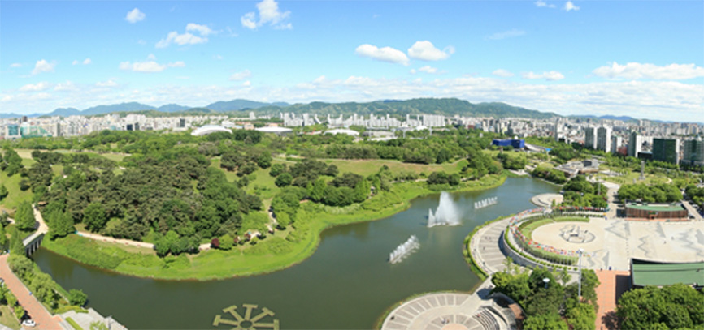

공원 이용 안내
언제든 쉬어 갈 수 있는 녹색 휴식처
건강은 물론 마음의 여유까지 생각하는 도심속의 오아이스, 올림픽 공원
공원 이용요금 및 기간
-
이용장소
서울시 송파구 방이동
-
이용기간
연중무휴
-
이용요금
무료
-
주차안내
주차안내바로가기
공원 이용시간
-
도보자전거 : 05:00 ~ 22:00 (광장지역은 24:00)
차량 출입 : 06:00 ~ 22:00
차량 출차 : 동2문 - 00:00 ~ 24:00 / 북2문, 남2문 - 06:00 ~ 22:30
※ 시설물 안전과 방문객의 신변보호를 위해 22시 이후에는 공원 안쪽으로의출입을 금합니다.
※ 심야 행사 시에는 출입문 개방 조정
공원 에티켓
-
자전거 및 인라인 이용시 과속을 자제하여 주십시오 토성 내 산책로는 자전거와 인라인의 통행을 제한하고 있습니다.
-
공원 내에서 다른 관람객들에게 피해가 되는 행동은 삼가하여 주십시오.
(고성방가, 취침, 과격한 행동, 잔디나 꽃밭 훼손,바퀴가 부착된 신발 착용 등) -
상업용 사진,영화(CF) 촬영시에는 사전승인을 받으시기 바랍니다.
(문의전화 : 02-2180-3515) -
흡연을 삼가하여 주십시오
-
야생동물의 보호를 위해 무분별한 열매 채취를 삼가하여 주십시오.
-
애완견 출입시 위생과 안전사고 예방을 위하여 반드시 개 목줄과 입 가리개, 배변봉투를 지참하여 이용해 주시기 바랍 니다.
공원 이용문의
| 공원 이용문의(안내센터) | 공연문의 | 대관 및 시설문의 | 스포츠 센터 (종목/강좌문의) |
|---|---|---|---|
| 대표전화 | 공원관리팀 | 02)410-1114 | |
| 세계평화의문 | 공원관리팀 | 02)2180-3564~5 | |
| 만남의광장 (동1문 안내센터) |
공원관리팀 | 02)2180-3566 | |
| 대표전화 | 공연사업팀 | 02)2180-3513~6 | |
| 안내 및 티켓판매소 | 공연사업팀 | 02)2180-3513~6 | |
| KSPO DOME | 공연사업팀 | 02)2180-3516 | |
| SK핸드볼경기장 | 공원사업팀 | 02)2180-3512 | |
| 우리금융아트홀 | 공원사업팀 | 02)2180-3518 | |
| 올림픽홀 | 공원사업팀 | 02)2180-3518 | |
| 뮤즈라이브 | 공원사업팀 | 02)2180-3518 | |
| KSPO DOME | 스포츠교실팀 | 회원안내실 대표전화 02)2180-3772~3 | |
| 테니스장 | 스포츠교실팀 | 회원안내실 대표전화 02)2180-3778 | |
| 축구장 | 스포츠교실팀 | 회원안내실 대표전화 02)2180-3787 | |
공원 유의사항
-
쓰레기 규격 봉투를 구매하여 지정된 장소에 배출하시기 바랍니다.
- 지체 수거 시에는 봉투를 구매하지 않으셔도 됩니다.
- 적발 시 서울특별시 도시공원조례 제 23조 별표4에 의거 과태료가 부과 됩니다.
특정 종교단체의 집회 및 특정단체의 영리 행위는 불가능 합니다.
식사는 도시락 외에는 반입이 불가능 합니다.
나무 훼손, 불을 피우는 행위, 지정된 장소 외 주차행위는 일체 금지합니다.
심한 소음(엠프, 노래방 기기 등)을 일으키는 행위는 일체 금지합니다.